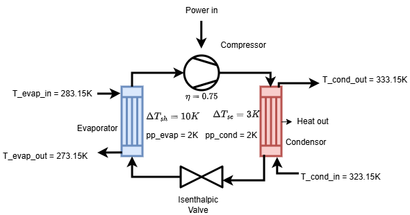
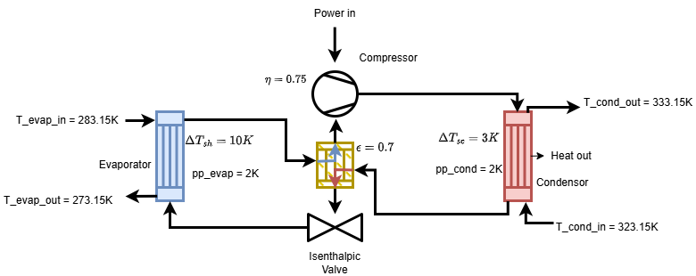
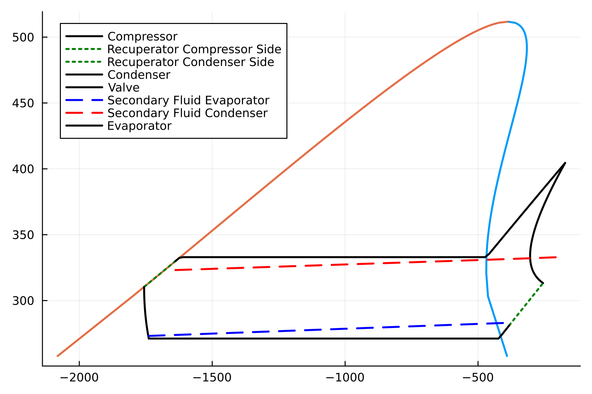
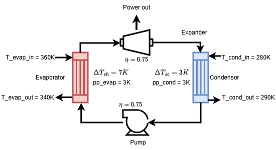
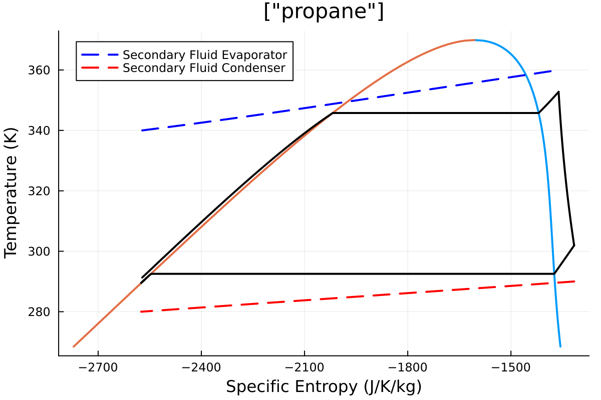

Examples
These examples show how to construct the system with parameters and how to solve it.
Note In all examples z denotes the number of moles, for mixtures ensure length(z) is same as the number of fluid components.
Heat Pump
The goal of a heat pump is to heat up the secondary fluid of the condenser with some input of energy. See Heat pump and Refrigeration cycle.

To construct the system, do the following:
julia> using Clapeyron, ThermoCycleGlides
julia> fluid = cPR(["cyclopentane"],idealmodel = ReidIdeal);
julia> η_comp = 0.75; pp_cond = 2; pp_evap = 2;
julia> T_evap_in = 273.15 + 10; T_evap_out = 273.15 + 0; T_cond_in = 273.15 + 50; T_cond_out = 273.15+60;
julia> ΔT_sc = 3; ΔT_sh = 10;
julia> hp = HeatPump(fluid=fluid,z=[1.0],T_evap_in=T_evap_in,T_evap_out = T_evap_out,T_cond_in = T_cond_in,T_cond_out=T_cond_out,η_comp=η_comp,pp_evap=pp_evap,pp_cond=pp_cond,ΔT_sc = ΔT_sc,ΔT_sh = ΔT_sh);
julia> sol_hp = solve(hp,ThermoCycleParameters(autodiff=false))
SolutionState{Float64, Int64}([0.12829257763187535, 1.4551588056895837], 16, 7, [0.0, 5.684341886080802e-14], [0.07660159441435545, 0.07660159441435545], [1.6566058479359296, 1.6566058479359296], true, 0, 2.5468671054250572e-15, 8.038873388460929e-14)
julia> COP(hp,sol_hp)
-3.735868783526992Note: COP is Coefficient of Performance of the Heat Pump, it is negative as we see change of enthalpy of the working fluid which is negative in the condenser.
To plot do the following:
using Plots
plot(hp,sol_hp,N=100)
Heat Pump with IHEX
Now the same heatpump with an internal heat exchanger of effectiveness ($\epsilon$) of 0.7 can be constructed as follows:

julia> hp_ihex = HeatPumpRecuperator(hp=hp,ϵ=0.7);
julia> sol_ihex = solve(hp_ihex,ThermoCycleParameters(autodiff = false))
SolutionState{Float64, Int64}([0.12829257763094135, 1.4173574009393946], 20, 4, [-2.4442670110147446e-11, 1.475086719437968e-10], [0.07660159441435545, 0.07660159441435545], [1.6566058479359296, 1.6566058479359296], false, 2, 2.9305166342606847e-7, 1.4952007363807764e-10, :subcritical)
julia> COP(hp_ihex,sol_ihex)
-3.812238518177511
Organic Rankine Cycle
An Organic Rankine Cycle aims to generate electricity from heating the working fluid, and passing it through an expander. See Organic Rankine Cycle for more information.

julia> fluid = cPR(["propane"],idealmodel = ReidIdeal);
julia> orc = ORC(fluid = fluid,z = [1.0], T_evap_in = 360, T_evap_out = 340, T_cond_in = 280, T_cond_out = 290, η_expander = 0.75, η_pump = 0.8, ΔT_sh = 7.0, ΔT_sc= 3.0, pp_evap = 3.0, pp_cond = 3)
ORC{Float64}(PR{ReidIdeal, TwuAlpha, NoTranslation, vdW1fRule}("Propane"), [1.0], 360.0, 340.0, 7.0, 280.0, 290.0, 3.0, 0.8, 0.75, 3.0, 3.0)
julia> sol = solve(orc,ThermoCycleParameters(autodiff=false))
SolutionState{Float64, Int64}([27.24650730018187, 8.310317975013438], 15, 3, [5.294850780046545e-9, -1.1973043001489714e-8], [19.921551772573725, 6.969208543698516], [29.511108921525086, 9.094386318669063], false, 2, 1.1554828892488157e-5, 1.3091569940174529e-8, :subcritical)
julia> η(orc,sol)
-0.08885630486192948Note: Here, the efficiency is also negative as there is an enthalpy drop of the working fluid in the expander while there is an enthalpy gain in the evaporator.
To plot the ORC cycle:
julia> using Plots
julia> plot(orc,sol,N =300)
Organic Rankine Cycle with IHEX
As for the heatpump we now construct the ORC with internal heat exchanger.

julia> orc_ihex = ORCEconomizer(orc=orc,ϵ=0.7);
julia> sol_ihex = solve(orc_ihex,ThermoCycleParameters(autodiff=false))
SolutionState{Float64, Int64}([26.973845640165056, 8.391221086120005], 15, 3, [-3.0100864023552276e-9, -3.514094260026468e-8], [19.921551772573725, 6.969208543698516], [29.511108921525086, 9.094386318669063], false, 2, 1.4416423095843544e-5, 3.5269625274231946e-8, :subcritical)
julia> η(orc_ihex,sol_ihex)
-0.0908283533392522
Mixtures
To use mixtures (multi-component) models for Clapeyron, construct the fluid with the desired components and ensure z to be the moles of each component and pass it to the cycle. In terms of solving, the difference with respect to pure fluids is that now there is a possibility of pinch point to be in two-phase. Hence we discretize the phase change zones.
julia> using Clapeyron, ThermoCycleGlides
julia> fluid = cPR(["propane","butane"],idealmodel = ReidIdeal);
julia> η_comp = 0.75; pp_cond = 2; pp_evap = 2;
julia> T_evap_in = 273.15 + 10; T_evap_out = 273.15 + 0; T_cond_in = 273.15 + 50; T_cond_out = 273.15+60;
julia> ΔT_sc = 3; ΔT_sh = 10;
julia> hp = HeatPump(fluid=fluid,z=[1.0,1.0],T_evap_in=T_evap_in,T_evap_out = T_evap_out,T_cond_in = T_cond_in,T_cond_out=T_cond_out,η_comp=η_comp,pp_evap=pp_evap,pp_cond=pp_cond,ΔT_sc = ΔT_sc,ΔT_sh = ΔT_sh);
julia> sol_hp = solve(hp,ThermoCycleParameters(autodiff=false))
SolutionState{Float64, Int64}([1.5812457906456645, 11.770249683622305], 20, 4, [4.746425474877469e-11, -1.3073986337985843e-12], [1.0706541681245205, 1.0706541681245205], [14.486154094902748, 14.486154094902748], false, 2, 4.0127165888769095e-8, 4.748225742363393e-11, :subcritical)
julia> show(sol_hp)
Iterations: 4
Function calls: 20
Final residuals: [4.746425474877469e-11, -1.3073986337985843e-12]
Final residual norm: 4.748225742363393e-11
Final x: [1.5812457906456645, 11.770249683622305]
Final lenx ||xn - xk||/||xk||: 4.0127165888769095e-8
Final lenf ||f(xn)||: 4.748225742363393e-11
Lower bounds: [1.0706541681245205, 1.0706541681245205]
Upper bounds: [14.486154094902748, 14.486154094902748]
Autodiff: false
Finite difference order: 2
Solution type: subcriticalPlotting
To plot the cycle use first load Plots.jl. Then follow:
plot(prob::ThermoCycleProblem,sol::SolutionState,kwargs...)To just plot the TS diagram of the fluid do:
plot(fluid::EoSModel,z::AbstractVector,kwargs...)Limitation
- Fluid models are limited to the ones provided by default in Clapeyron.jl. Now restricted to
CubicModelandSingleFluidmodels. - For now the solver is stable for sub-critical parameters. So if incase the solver does not converge please check if the parameters provided allow the solution to be subcritical.
- For mixtures, it is recommended to use parameters sufficently below the critical point as sometimes near crictical zone the computation of dew and bubble points can fail.
- If for solving with
autodiff = true, the first run will have significant compilation time. The subsequent runs will be faster.